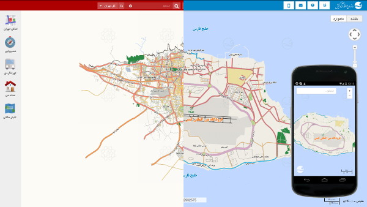

Your browser doesn't support the features required by impress.js, so you are presented with a simplified version of this presentation.
For the best experience please use the latest Chrome, Safari or Firefox browser.
About me
 My name is Behrooz. It is roughly pronounced as [behˈɾuːz].
I am a programmer who is interested in web development, currently employed by Booking Experts. I like to improve anything that I get in touch with, specially if it be some code. I am a huge free software enthusiast and made many contributions to different projects with different programming languages. Some other places to find out more about me:
My name is Behrooz. It is roughly pronounced as [behˈɾuːz].
I am a programmer who is interested in web development, currently employed by Booking Experts. I like to improve anything that I get in touch with, specially if it be some code. I am a huge free software enthusiast and made many contributions to different projects with different programming languages. Some other places to find out more about me:
Résumé: careers.stackoverflow.com/behrooz
Social networks:
facebook
twitter
linkedin
ohloh
last.fm
Expertise
• Front-end and back-end web development.
• Mobile development (Hybrid and native).
• Modular, scalable, readable and reusable code.
• Performance optimization and scaling.
• API design.
Note: I would be an asset to projects that use a mixture of programming languages as I can work with many imperative and functional languages.
Technical Skills
Ruby
Rails
rspec
cucumber
capybara
unicorn
haml
Sinatra
Rake
Minitest
FactoryGirl
Capistrano
Javascript
ExtJS
EmberJS
jQuery
Mootools
OpenLayers
Mocha
Chai
Scala
Sbt
Play!
akka
PHP
Agavi
Symfony
ezComponents
Python
Django
GTK+
Git
Java
Erlang
Vala
Objective-J
Clojure
Objective-C
Apache
Nginx
Postgresql
Redis
MySQL
Memcached
couchdb
Solr
Linux
Puppet
QEMU
Libvirt
XMPP
Apache Cordova
...
Note: 11 languages are listed, why so many languages? basically all imperative languages are the same and syntax changes a bit (It is the same for functional languages). In that practice, I have professional knowledge of two kind of languages: Imperative and Functional.
1/2
Experience
Full stack developer at
BookingExperts
( March 2014 - current )
as a full stack developer (just like others), I am responsible for designing APIs, performance optimizations, adding new features, fixing bugs and keeping an eye on service to ensure it is always up.
ruby
javascript
rails
postgresql
solr
rspec
minitest
cucamber
redis
Full stack developer at
Rojina
( May 2013 - current )
Responsible for development of web and mobile interfaces of map API.
php
openlayers
javascript
java
android
cordova
DevOp at
Takhfifan
( February 2013 - November 2013 )
Responsible for architect and develop both web application and mobile application.
ruby
javascript
rails
postgresql
solr
rspec
redis
cappistrano
puppet
2/2
Experience
Web developer at
Xamin
( June 2012 - January 2013 )
Architect and lead developer of multiple sub projects which combination of them created Xamin project (a linux distribution). I participated in every project that had some kind of web representation including our virtual machine orchestrator, Archipel.
php
python
scala
erlang
javascript
postgresql
redis
solr
XMPP
Web developer at
Atras
( 2010 - 2012 )
Architect and lead developer of the flagship product of Atras, a BPMS.
php
javascript
java
agavi
extjs
mysql
XMPP
Web developer at
Rakhshfam
( 2006 - 2009 )
localizing FOSS specially working on CMS/CRM like wordpress, prestashop, ... with focus on Themes and plugins/modules.
php
javascript
mysql
1/6
Portfolio
ruby
postgresql
solr
rails
javascript
REST-API
2/6
Portfolio
ruby
postgresql
solr
rails
javascript
Geo-API
Google Maps
3/6
Portfolio

php
javascript
java
android
OSMDroid
cordova
OpenLayers
4/6
Portfolio
Exporter
a firefox addon to help Iranian bloggers to migrate to other blog systems if their blog got censored by government.
My realm
a firefox addon to avoid unwanted disturbs of censorship page in Iran.
javascript
XUL
5/6
Portfolio
Radiotray
an online streaming player with simple UI.
python
gtk+
dbus
gstreamer
6/6
Portfolio
Archipel
Archipel is a solution to manage and supervise virtual machines.
python
XMPP
Objective-J
Cappuccino
Some other activities
- Archive of my old blog (Persian)
- linuxfm podcast (Persian)
- One of the judges of zconf in second, fourth, and fifth year
- My presentation, "Functional languages", in Tehlug
- My Article, "git", in first zconf (Persian)
- My presentation, "Python, path to enterprise", in first pycon
- My presentation, "Scala", in third zconf